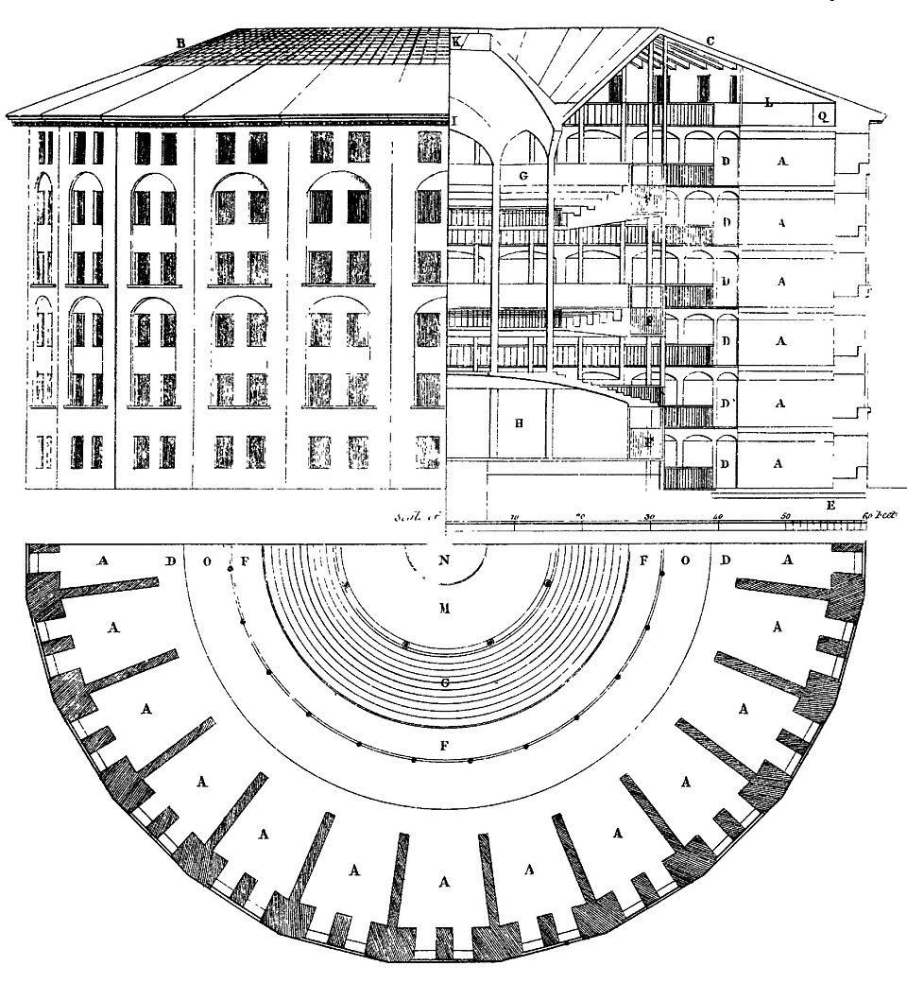

CHAPTER 2 · AI 시대의 루프
블랙박스, 그리고 무감각의 루프

제러미 벤담, 파놉티콘 설계도 (1791) — 감시자는 보이지 않고, 모두가 감시된다
왜
이 배차
를 받았는가?
왜
평점
이 깎였는가?
왜
콜
이 끊겼는가?
항의할 사무실도, 물어볼 감독관도 없다.
이유를 알 수 없는 불이익이 반복되면 — 인간은
묻기를 멈춘다
.
이유를 알 수 없는 불이익 앞에서, 노동자는 묻기를 멈추고 따르기 시작한다